阅读词表
| 词条 | 拼音 | 类型 | 说明 |
|---|---|---|---|
| 绿松石 | lǜ sōng shí | rare_word | 一种蓝绿色矿石，常用于装饰。 |
| 鲧 | gǔn | rare_word | 传说中禹的父亲，曾奉命治水。 |
| 偃师 | yǎn shī | place | 今河南洛阳附近地名，二里头遗址所在地。 |
| 贡赋 | gòng fù | rare_word | 向统治者进贡或缴纳的赋税。 |
| 顾颉刚 | gù jié gāng | person | 现代历史学家，“古史辨”学派代表人物。 |
| 杂糅 | zá róu | rare_word | 混杂融合在一起。 |
| 碳化 | tàn huà | rare_word | 有机物受热或长期埋藏后变成含碳状态。 |
| 浮选法 | fú xuǎn fǎ | rare_word | 考古中利用水筛选炭化植物遗存的方法。 |
| 蜷曲 | quán qū | rare_word | 弯曲、卷曲。 |
| 浚川 | jùn chuān | rare_word | 疏通河道。 |
| 构拟 | gòu nǐ | rare_word | 根据材料推想、重建原貌。 |
| 蚌镰 | bàng lián | rare_word | 用蚌壳制作的收割工具。 |
| 营窟 | yíng kū | rare_word | 建造洞穴居所。 |
| 姒 | sì | rare_word | 夏朝王室族姓。 |
| 蔚为大观 | wèi wéi dà guān | idiom | 发展成盛大壮观的景象。 |
| 亢龙有悔 | kàng lóng yǒu huǐ | 项目词典 | 《易》语，处于极盛而不知退会有悔恨。 |
| 华夏文明 | huá xià wén míng | 项目词典 | 在中国早期历史中逐渐形成和发展的文明传统。 |
| 长江流域 | cháng jiāng liú yù | 项目词典 | 长江水系覆盖的广大地区。 |
| 先后 | xiān hòu | 项目词典 | 《盘庚》引文中指已故先王。 |
| 图腾 | tú téng | 项目词典 | 族群崇拜并作为象征的动物、植物或自然物。 |
| 土著 | tǔ zhù | 项目词典 | 本地原有居民或族群。 |
| 地层 | dì céng | 项目词典 | 遗址中不同时期堆积形成的层次。 |
| 城邑 | chéng yì | 项目词典 | 古代有人群聚居、具有一定组织和防御功能的城镇聚落。 |
| 夯土 | hāng tǔ | 项目词典 | 把土层层夯实形成建筑基础或城墙的技术。 |
| 尚书 | shàng shū | 项目词典 | 儒家经典之一，文中引用《盘庚》篇。 | 保存上古政治文献和诰命的儒家经典。 |
| 新砦 | xīn zhài | 项目词典 | 河南新密遗址；“砦”同“寨”，网页可能误作“新碧”。 |
| 易经 | yì jīng | 项目词典 | 文王卦爻辞体系，书中用以讨论翦商谋略。 | 文王卦爻辞体系。 | 以六十四卦及卦爻辞为主体的古代经典。 |
| 春秋 | chūn qiū | 项目词典 | 孔子时代相关的编年史经典。 |
| 水牛 | shuǐ niú | 项目词典 | 商人畜牧和祭祀中涉及的家畜。 |
| 浮选 | fú xuǎn | 项目词典 | 考古中用水分离土样里的植物种子等细小遗存的方法。 |
| 淮河 | huái hé | 项目词典 | 中国东部重要河流。 |
| 爻辞 | yáo cí | 项目词典 | 解释每一爻吉凶和意义的文字。 |
| 石峁 | shí mǎo | 项目词典 | 陕北大型史前城址，文中与郑州商城作比较。 | 陕北大型史前城址。 |
| 箭镞 | jiàn zú | 项目词典 | 箭头。 | 箭头，文中有青铜、石骨材质。 |
| 粟米 | sù mǐ | 项目词典 | 小米；北方旱作农业的重要作物。 |
| 良渚 | liáng zhǔ | 项目词典 | 长江下游新石器时代重要考古文化和古城遗址。 |
| 许宏 | xǔ hóng | 项目词典 | 考古学者，长期主持或研究二里头考古。 |
| 迁徙 | qiān xǐ | 项目词典 | 群体从一地迁移到另一地。 |
| 铭文 | míng wén | 项目词典 | 铸刻在青铜器等器物上的文字。 | 器物上铸刻或刻写的文字。 |
| 陶寺 | táo sì | 项目词典 | 山西襄汾一带龙山时代重要遗址。 |
青铜器词表
| 器名 | 拼音 | 类型 | 说明 |
|---|---|---|---|
| 豆 | dòu | bronze_item | 古代盛肉或食品的高足盘形器。 |
| 盨 | xǔ | bronze_item | 古代盛食物的铜器，多有盖、耳和圈足。 |
| 镞 | zú | bronze_item | 箭头。 |
章节导读札记
| 主题 | 札记 | 操作 |
|---|---|---|
| 暂无章节导读札记 | ||
用户札记
| 类型 | 页 | 内容 |
|---|---|---|
| 暂无用户札记 | ||
原书阅读器页 049原书物理 PDF 页 047印刷页 35
第二章大禹治水真相：稻与龙
在上古的传说中，“大禹治水”是人类改变自然界的宏大事业；禹的儿子启则在随后建立了华夏第一王朝——夏。两代人的故事堪比创世史诗，壮丽辉煌。
按照古书记载，在尧和舜的时代曾经发生大洪水，尧帝派禹的父亲鲧治水，但没有成效，鲧被处死；舜帝则继续任命禹治水，结果禹不仅治理了水患，还开辟了黄河和长江流域的陆路与水路交通网，划出了九州行政区。[[fn:1]]
远古历史总是和神话杂糅。现代学术产生后，有学者开始质疑大禹传说的真实性，比如开创“古史辨”学派的顾颉刚，他就认为大禹的事迹是战国时的人虚构的。
历史文献在流传的过程中往往会被后人加工或改造，甚至被塞进更晚的篇章。现存关于大禹最早的文献，是《尚书》开头的几篇，如《舜典》《禹贡》，但受到的怀疑也最多。近年，一件流散海外的青铜器“遂公盨”被发现，其铭文中有这样的叙述：“天命禹敷土，随山浚川。”但它属于西周，跟大禹的时代相距甚远。
传说是大禹凿通了长江、黄河、淮河和汉江，但从工程的可能性看，这都不现实。即便是现代国家也不太可能实施这种完全改变大江大河的工程，更何况在4000年前还没有出现地跨黄河和长江流域的大型国家，其人口规模和技术水平根本不足以改造大江大河。
难道，大禹治水只是西周或者春秋时候的人创造的神话？考古发现能提供解答，虽然它有时会离人们最初想象的“答案”很遥远。
依赖水稻的古洛阳一二里头
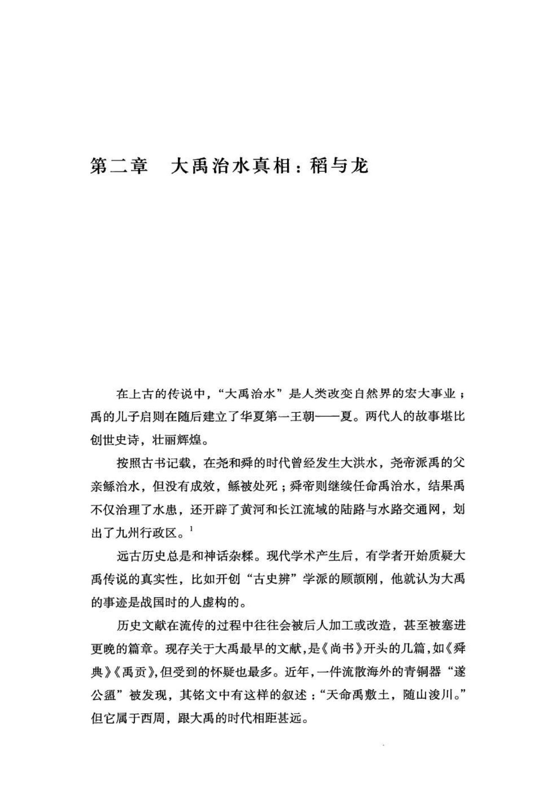
原书阅读器页 050原书物理 PDF 页 048印刷页 36
在今洛阳市以东20公里处，伊河和洛河沉积形成的小平原上，发现了疑似“夏都”的偃师二里头遗址。它的占地面积、宫殿规格以及手工业的发达程度都超过了以往和同期任何遗址。而且，二里头遗址距今3900—3500年，恰好在商朝之前，所以它很可能就是夏朝的都城。
二里头考古的成果已经有很多，但留心二里头人的主食是哪种的还不多，大多数学者普遍默认，按照华北地区的传统，它应当以旱作的粟（小米）为主。
但事实恰好相反，二里头人的主食是水稻（大米）。不仅如此，这背后还可能隐藏着“大禹治水”的来历。学界没有意识到这个问题的原因，说起来颇为有趣，就是按粮食颗粒数进行统计和排名，而忽视了不同粮食的颗粒其实差别巨大。
历经上千年埋藏的粮食大都已经碳化，如果不是大量的堆积很难被发现。近年来，考古工作者开始采用“浮选法”来寻找粮食：在遗址中采集土样，打散后放入水中搅拌，而碳化的粮食比水轻，所以粮食会浮上水面。这样，人们就可以采集到古人遗弃的粮食颗粒，观察古人在种什么、吃什么。
在1999—2006年的二里头发掘中，对遗址土样采用“浮选法”得到的样本显示：粟米（小米）数量最多；稻米（大米）其次，约为粟米数量的一半；其他旱作的黍、大豆和小麦数量很少（参见表一）。[[fn:2]] 这样看来，稻米在二里头似乎不占主要地位。
表一：《二里头：1999-2006》中的出土粮食颗粒占比
| | 粟 | 稻 | 黍 | 合计 |
| ---- | --- | ----- | ----- | --- |
|粒数 | 11059 | 5687 | 1542 | 18288 |
| 粒数占比 | 60.5% | 31.1% | 8.4% | |
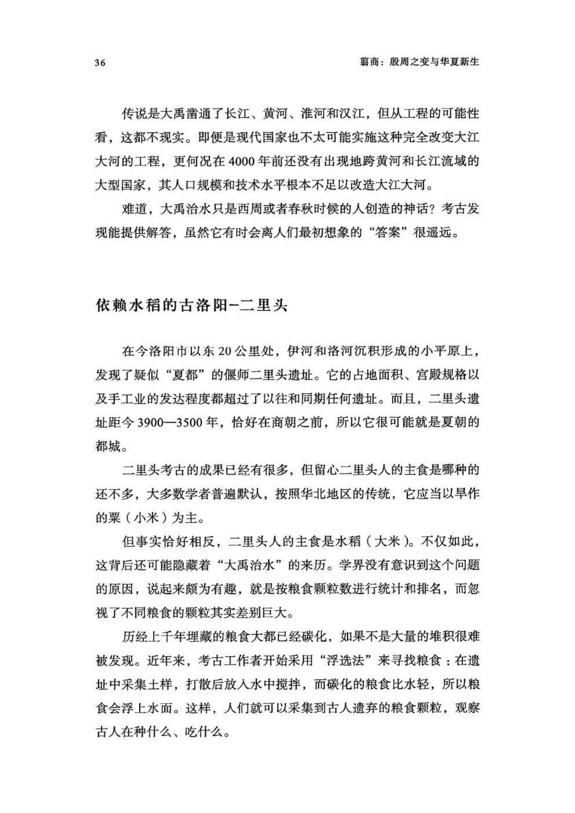
原书阅读器页 051原书物理 PDF 页 049印刷页 37
但粟米和稻米的颗粒大小及重量很不一样，单棵植株收获的籽粒数量也相差悬殊。分析古人的种植规模和食物构成，应当统计的是重量，而非粒数。但很可惜，浮选工作没有称重的报告，目前还只能通过粮食颗粒数“构拟”它们的重量。在农学上，统计不同作物颗粒重量的术语是“千粒重”，所以，我们可以参考现代粮食的“千粒重”数值进行折算。这也是不得已的替代方法。
粟米平均千粒重一般为2克，稻米平均千粒重一般为16—34克，即使按最低的16克计算，两者颗粒重量也相差七倍。根据这个比例，二里头出土的稻米重量应是粟米的四倍，是当之无愧的最重要的粮食。[[fn:3]]
二里头出土的粟、黍和稻粒：三者体积差别很大，如果用颗粒数来衡量它们的种植面积，显然会产生重大偏差。[[fn:4]]（图）
2019年，一份样本更多的浮选统计论文发表，包含二里头各期的277个采样，但仍是按照粮食颗粒数计算的。这次，稻米颗粒数量略超过粟米，位居第一：稻，14768粒；粟，13883粒；黍，2248粒。
稻米粒数略多于粟，这让论文作者觉得难以解释，便猜测这些稻米是从外地进贡来的：“通过收取贡赋的手段，从当时的水稻种植区域征集大量稻谷。”[[fn:5]] 但稻谷种植区应当在哪里，古人的交通问题如何解决，这些都还无法解答。
如果把颗粒数折算成重量，稻米的权重还要上升很多，占比84.5%，在二里头人的种植面积和食谱中占据绝对优势（参见表二）。
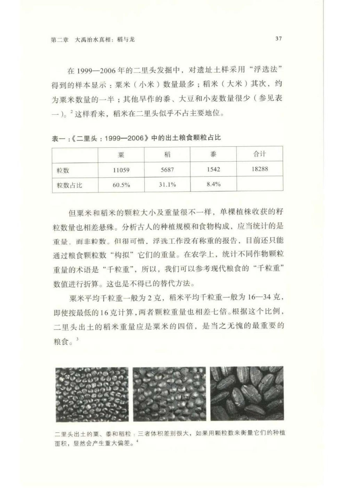
原书阅读器页 052原书物理 PDF 页 050印刷页 38
表二：二里头出土粮食颗粒及折合重量
| | 稻米 | 粟米 | 黍米 | 合计 |
| ----- | ------ | ------ | ------ | ----- |
| 颗粒数 | 14768 | 13883 | 2248 | 30899 |
| 千粒重（克）| 16 | 2 | 7 | |
| 折合克数 | 236.288 | 27.766 | 15.736 | 279.79 |
| 粒数占比 | 47.8% | 44.9% | 7.3% | |
| 重量占比 | 84.5% | 9.9% | 5.6% | |
现在洛阳市周边，包括二里头地区，已经很少种植水稻了，但距今4000年前显然不是这样。
水稻发源于长江流域，从6000年前以来，一直在缓慢而持续地向华北传播。在距今4000余年前的华北遗址中，有很多都发现过水稻粒，但数量占比很低，几乎可以忽略不计。可见，二里头发现的水稻不可能是外来的贡品，因为在二里头人还没有建立起王朝、无法向外地征收“贡赋”的时候，他们就以水稻为主粮了。
这就需要说说二里头人的来历。
移民穿越嵩山
考古发现，二里头人并非洛河边的土著居民，他们来自位于二里头东南方100多公里的新砦聚落，而新砦和二里头之间隔着嵩山。
新砦聚落存在于距今4000—3900年间，面积约1平方公里，这意味着聚落人口已多达数千。在龙山时代的繁荣过去之后，这种规模的聚落已经很少见，显然，新砦人找到了某种可以使人口增殖的秘诀。
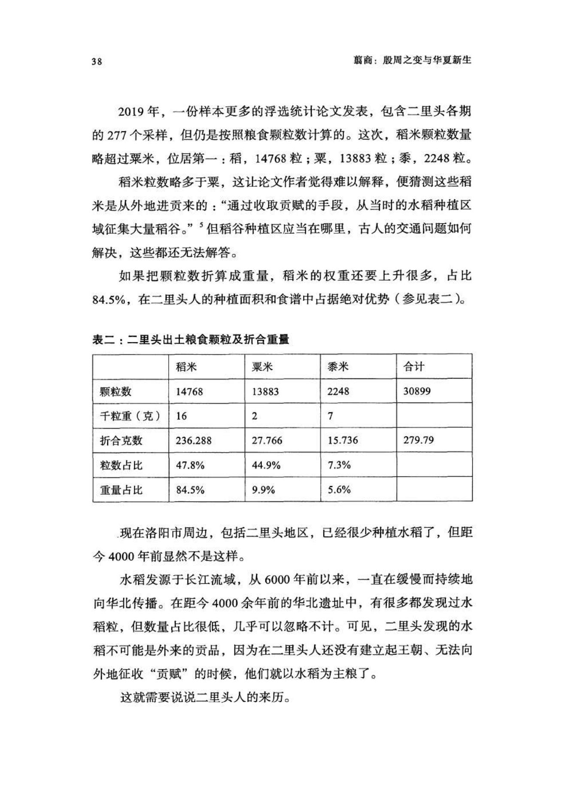
原书阅读器页 053原书物理 PDF 页 051印刷页 39
考古工作者对新砦遗址也做过浮选，稻米粒数占54.37%，折合成重量的占比则是85.1%，和二里头的数据（84.5%）非常接近。[[fn:6]] （参见表三）
表三：新砦遗址出土粮食颗粒及折合重量
| | 稻米 | 粟米 | 黍米 | 合计 |
| ----- | ------ | ------ | ------ | ----- |
|颗粒数 | 429 | 256 | 98 | 783 |
|千粒重（克）| 16 | 2 | 7 | |
|折合克数 | 6.84 | 0.51 | 0.69 | 8.04 |
|粒数占比 | 54.8% | 32.7% | 12.5% | |
|重量占比 | 85.1% | 6.3% | 8.6% | |
到3900年前，新砦人突然向西北穿过嵩山，进入洛阳盆地，在古伊洛河北岸营建起新的家园，这就是二里头的来历。新聚落和新砦规模接近，也是约1平方公里，数千人。
在二里头遗址最早的地层（一期），考古工作者发现了捕鱼用的骨鱼叉和陶网坠，很多蚌壳制作的工具，如箭镞和用于收割的蚌镰，显示当年这里是水滨湿地环境。
二里头一期（距今约3900—3800年）的聚落规模，继承了新砦遗址，面积约1平方公里，尚未发现大型建筑。
二里头与新砦遗址方位[[fn:7]]（图）
不过，水稻在二里头人的粮食中已占据最重要地位：在这一期地层内，发现水稻953粒、粟155粒、黍36粒。[[fn:8]] 这个比例和新砦可谓一脉相承。值得注意的是，此时的二里头聚落规模不算大，还不可能统治到较远的地方，所以水稻肯定不是外来的“贡赋”，只能是自己生产。
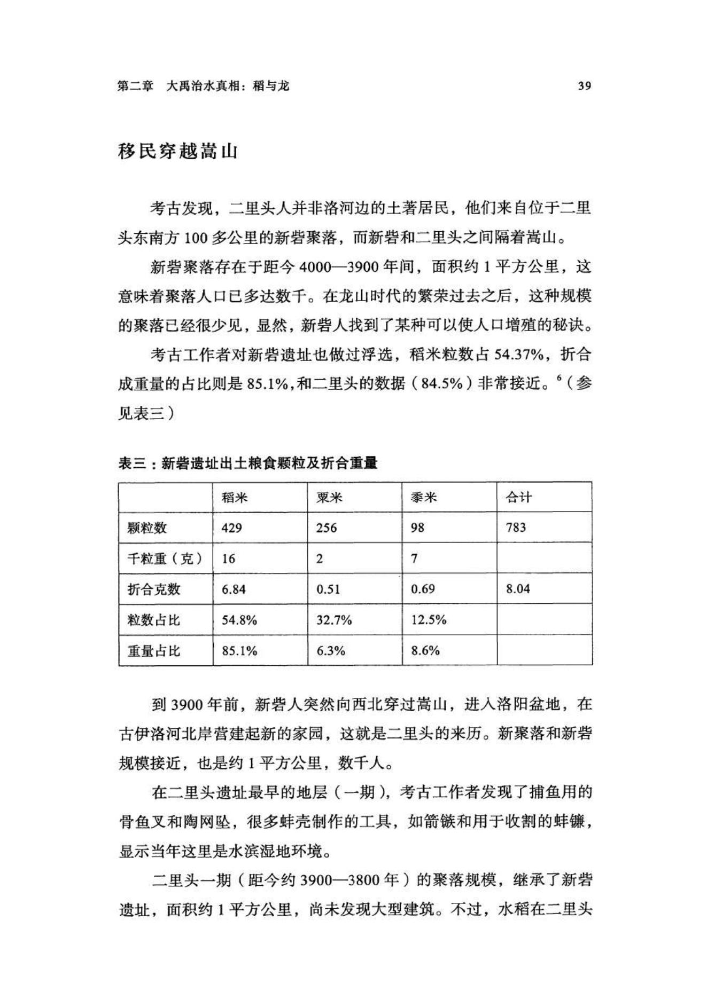
原书阅读器页 054原书物理 PDF 页 052印刷页 40
洛阳，位于中国地形第三和第二阶梯过渡带上的一个大平原和山地的交界处，被断续的低山包围成不太严密的盆地，而黄河正是从洛阳北部山地穿过，然后流入开阔的华北-黄淮海大平原。在新石器时代，洛阳盆地一直有零星的聚落，到新石器末尾的龙山文化时代（距今4500—4000年），曾出现部落间剧烈冲突的迹象，如各种被杀害后遗弃的尸骨（王湾二期），[[fn:9]] 但并没有发育出大型城邑。龙山时代的辉煌基本在洛阳盆地之外，比如，在东边，嵩山东南麓曾出现过一系列夯土小城-小型古国，在西北方，临汾盆地则有繁荣的陶寺古国。
龙山时代结束后，洛阳盆地才成为孕育华夏文明的温床。
大禹治水真相
《史记•夏本纪》中有一处很特殊的记载，说大禹在治水期间曾经让他的助手“益”给民众散发稻种，在低洼多水的地方种植：
以开九州，通九道，陂九泽，度九山。令益予众庶稻，可种卑湿。
大禹推广稻作在其他古书中都没有相关记载，但在《史记》中却出现过两次。这应当不是司马迁的笔误，而且，在新砦和二里头考古中也都得到了验证。
在有关大禹的传说中，治水的背景是大洪水泛滥，所以有学者认为，龙山时代的华北曾出现过一些古国，但在4000年前陷入萧条，原因就是那场传说的大洪水。但这个观点很难成立，因为在新石器时代，华北以粟、黍等旱作农业为主，基本不需要人工灌溉，从而聚落也就可以远离河谷低地。龙山时代最显赫的古国，如山西陶寺、清凉寺和陕西石峁，都坐落在山前和梁峁地带，比临近的河谷高出数十米，不太会遭受洪水威胁。总之，它们的衰落可能各有原因，但不会是因为洪水。
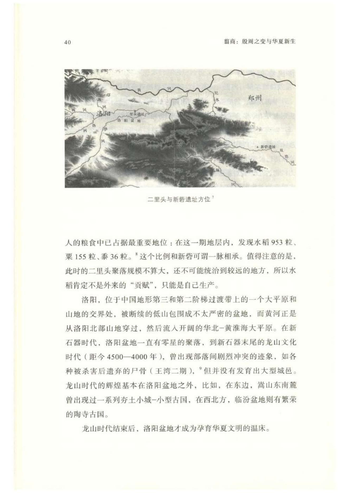
原书阅读器页 055原书物理 PDF 页 053印刷页 41
传说是经过诸多流变、改造的历史记忆，其最初的“内核”会被层层包裹，甚至改头换面，难以识别。但参照考古成果，我们还是能发现“大禹治水”的最初内核：一场龙山末期部分古人改造湿地、开发平原的活动。
这涉及上古和后世地理环境的区别，需要多解释一下。
从历史时期直到现在，江河下游的平原地带都是人口最为密集的地区，如华北平原、黄淮海平原、长江中下游平原。但上古的石器时代则截然相反，在没有人为筑堤干预的情况下，江河在平地上容易呈漫流状态，而湿地沼泽并不适合农业。
《尚书•禹贡》这样描写黄河下游的景观：“又北，播为九河，同为逆河，入于海。”这里的“九河”不是确数，是泛称，指下游黄河形成多条扇状分岔，泛滥成为广阔湿地，与海滩相连。这是上古时代未经治理的下游平原面貌，而内陆的平原地区，其环境也与此类似。比如，关中的仰韶文化遗址就有大量和水有关的元素，捕鱼的鱼钩、网坠，用蚌壳制作的各种工具，乃至陶器上画有大量鱼类图案等。这些遗址大都分布在台地，远离湿地水滨，看来古人也会到湿地中渔猎。
而在华北地区龙山时代的遗址中，普遍有少量稻谷，虽然占比很小，但说明黄河流域的人们已经开始尝试利用湿地边缘种植水稻。新砦-二里头人则走得更远，他们已把水稻作为主粮，而这就需要开发湿地，排干沼泽，将其改造成拥有灌排水系统的稻田。简而言之，在龙山时代结束后的“大萧条”中，新砦-二里头人之所以能够异军突起，甚至建立华夏第一王朝，水稻是重要原因。
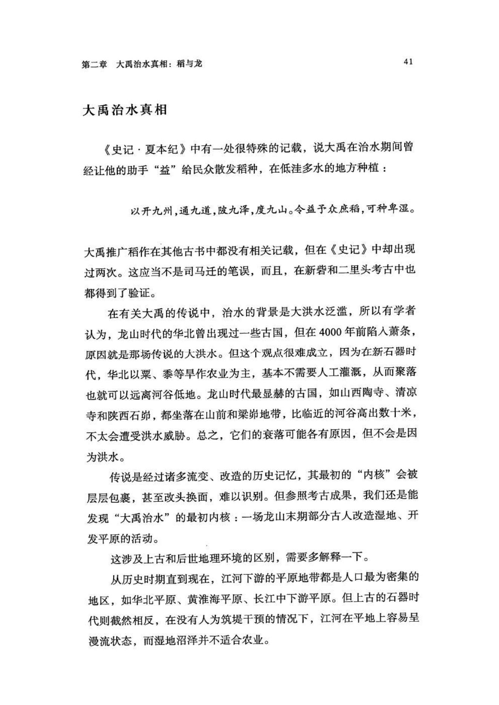
原书阅读器页 056原书物理 PDF 页 054印刷页 42
这在文献中也能找到一些旁证。战国的孟子这样描述大禹的治水：“当尧之时，水逆行、泛滥于中国，蛇龙居之，民无所定，下者为巢，上者为营窟……使禹治之。禹掘地而注之海，驱蛇龙而放之范，水由地中行，江、淮、河、汉是也。险阻既远，鸟兽之害人者消，然后，人得平土而居之……”（《孟子•滕文公章句下》）
从孟子的描述看，禹的治水工作就是排干和改造湿地。这其实是新石器晚期以来几乎全人类共同的事业。比如，古罗马城是在公元前6世纪王政时期的排干沼泽工程中初步建成的，甚至直到工业时代初期，巴黎的凡尔赛宫，乃至整座圣彼得堡市，也都是排干沼泽后营建出来的。
进入现代社会，平原地区的人口最密集，产业也最集中，但这已经不是石器时代的本来面貌，而是后来人工改造地理的产物。新砦-二里头人可谓这个变化的先行者。
当然，改造湿地、扩大稻田的工作并非新砦-二里头人的首创，南方稻作的良渚和石家河古国都曾经有过这种工程，比二里头要早一千年甚至更多，但都还没形成持续的效果就先后解体了。
但在华北，改造平原湿地的工作，起步虽晚，却更有成效和持续性。原因何在？
其一，可能是因为比起南方，华北降雨较少，更容易排涝，且粮食作物更多元，既有水稻，也有旱作的黍、粟、豆和麦，这样的话，改造初期的湿地适合种植水稻，但随着气候暖湿程度的减弱，二里头这种“稻作殖民地”会逐渐回归旱作，同时，稻田灌溉技术被保留下来，继续用于粟、麦等北方作物，而这对于旱作农业的增收有重要作用。这可能也是为什么继夏朝之后，商朝和周朝都建立在华北的平原地带，并奠定了此后直至秦汉的“华北优势”。
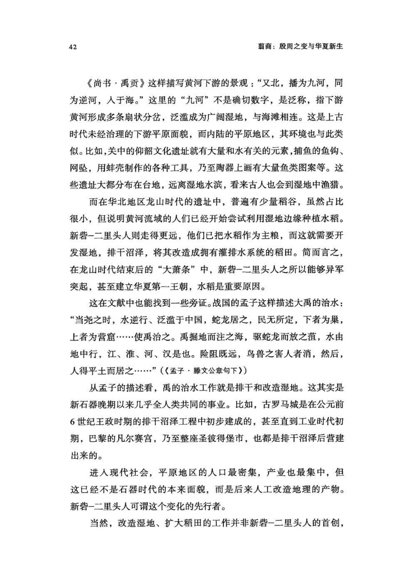
原书阅读器页 057原书物理 PDF 页 055印刷页 43
当然，和后世相比，新砦-二里头的人口基数仍然很低，改造湿地平原的工作也很有限。新砦属于豫西山地与河南平原的交界带，地势相对低平，向东就是广阔的大平原-古湿地，但新砦人却没有东进，而是选择了洛阳盆地的二里头，究其原因，这很可能是因为：洛阳盆地面积有限，二里头周边的微环境更容易改造；他们当时的人口规模也还不足以全面开发大平原。
其二，新砦人有机会扩展稻作农业还有一个重要原因：从陶器器型看，新砦属于主要分布在淮河、汉江流域以及长江中游北岸稻作区的煤山文化，[[fn:10]] 且位于煤山文化的最北边，稻作和旱作农业的杂糅地带。正是在此基础上，新砦人用水稻开发了二里头。
其三，新砦人并不是从南方的煤山文化中心区搬迁而来的移民，因为没有发现他们饲养水牛的证据。水牛是热带、亚热带动物，直到今天，也还是只能生活在秦岭-淮河以南地区。新砦和二里头出土过很多人工饲养的牛骨，但都属于黄牛，没有水牛，说明他们并非从南方迁徙而来。新砦人的先祖应当是以旱作为主的本地土著，后来因被南方蔓延来的煤山文化同化，从而学会了水稻种植。二里头出土过犀牛和鳄鱼的骨头，可见当时华北的气候比现代更湿热。至于为何水稻比水牛先传播到黄河流域，目前还没有令人满意的答案。
游龙的王朝
距今4000年前，河南平原上有大量水泊湿地，所以新砦人可能是一个生活在湿地中的部族，能很快适应南方传来的水稻农业。另外，二里头-夏朝人有崇拜龙的习俗，应当也和他们曾经的滨水生活有关，因为上古传说中的龙都是水生，形体与蛇接近。
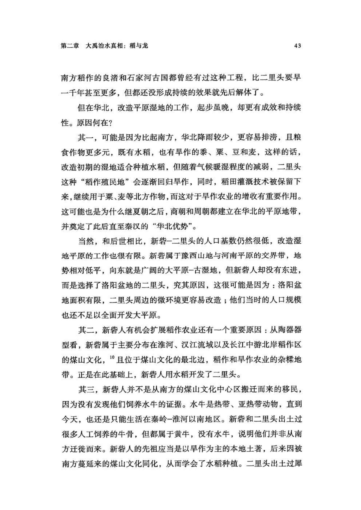
原书阅读器页 058原书物理 PDF 页 056印刷页 44
顾颉刚早已发现，“禹”字从“虫”，也就是蜷曲的蛇形，而在古史中，禹的父亲名“鲧”，字义是某种水生之物，据说鲧死后变成了黄龙。（《山海经•海内经》郭璞注）夏朝王室族姓为“姒”，在后世的甲骨文和金文中，它的“以”部的写法就是蜷曲的蛇形。[[fn:11]]
这些古史中的信息应当不是偶然，因为在考古中也能找到呼应。二里头的显贵墓葬经常随葬绿松石的龙形器或饰牌。其中最典型的，是一座二期墓葬，编号2002VM3。[[fn:12]] 墓主上身放着一条绿松石镶嵌的“龙形器”，全长约70厘米，由两千多片细小的绿松石片组成，呈游动的蛇形，从墓主肩部延伸到腰部。龙头用两枚白玉珠做眼，球状绿松石做成蒜头鼻，鼻梁是三节柱状青玉和白玉。这些复杂的绿松石结构可能是粘贴在纺织物上面的，类似挂毯，覆盖在墓主上半身。出土时，有机物已经腐蚀消失，绿松石嵌片尚保持原位。这位墓主被埋葬在当时的一座大型宫殿院内，还有其他高级随葬品，显然是王室成员的级别。由此亦可见，绿松石龙很可能代表的是夏-二里头人的图腾。
后来，二里头显贵的丧葬习俗发生了一些改变，绿松石镶嵌的大龙变成了巴掌大小的铜牌饰，上面用绿松石拼成一只俯卧的动物，但造型比较抽象，不太容易辨认是什么。但有二期2002VM3中的龙形器先例，学者认为，这些铜牌饰的造型也是龙。[[fn:13]]
龙一直是二里头高等级墓葬的标志，迄今发现龙形器和铜牌饰的高等级墓不超过五座。另外，龙形图案不止有墓葬中的绿松石饰物，很多陶器上也有龙或蛇的花纹和造型。
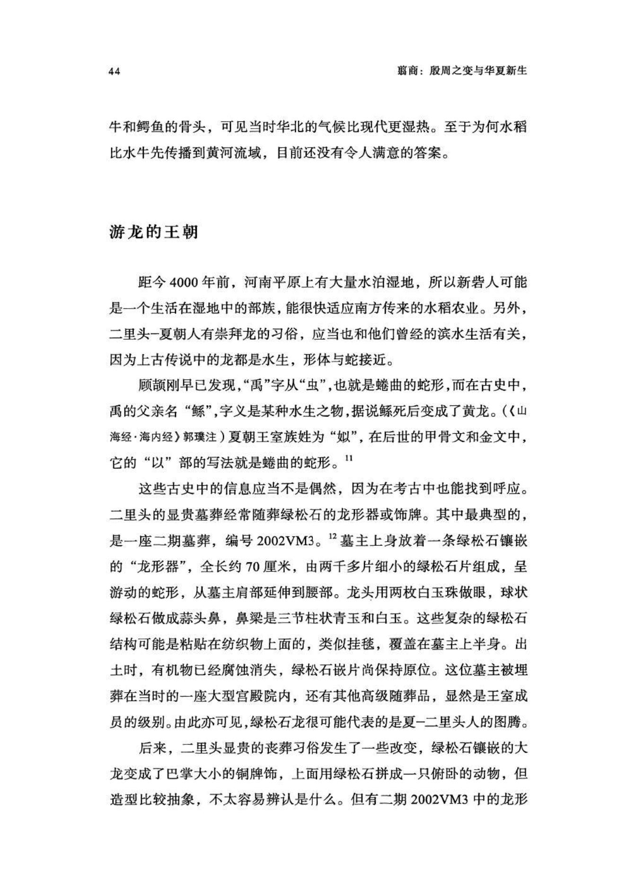
原书阅读器页 059原书物理 PDF 页 057印刷页 45
2002VM3绿松石龙形器[[fn:14]]（图）
二里头发现的龙蛇纹饰[[fn:15]]（图）
在二里头之前，龙已经有一千多年的历史。在距今5000多年前的红山文化中，经常出现玉雕龙，稍后的凌家滩和良渚文化中也有玉龙，陕北石峁古城（比二里头古城早三四百年）的石墙有浮雕龙形图案。二里头的绿松石龙形器造型和石峁皇城台的浮雕龙接近：石峁浮雕龙的头部为圆弧形，二里头的初看是方形，但实际上方形只是基座轮廓，其中包含的龙头仍是圆弧形。石峁的龙元素并不多，到二里头则蔚为大观。
石峁皇城台大台基8号石雕龙拓片[[fn:16]]（图）
比较起来，二里头的龙的规格更高，出现在最为显赫的墓葬，且俯卧在墓主上半身。这是其他文化里的“龙”没有的“待遇”。可见，二里头-夏朝王室和龙的关系更密切，或者说，龙是他们的象征和图腾。
在《易经》的《乾》卦中，也多次出现龙。如“潜龙”，即潜在水下的龙；“或跃在渊”，省略的主语也是“龙”；龙还可以飞，所谓“飞龙在天”。
初九：潜龙勿用。
九二：见龙在田，利见大人。
九三：君子终日乾乾。夕惕若厉。无咎。
九四：或跃在渊。无咎。
九五：飞龙在天，利见大人。
上九：亢龙有悔。
用九：见群龙无首。吉。
从《易经•乾》的爻辞可知，古人观念中的龙主要生活在水中，但也会一飞冲天。
二里头人有稻作和龙崇拜，这让他们在普遍萧条中建立起繁荣的聚落；然而，要超越昔日龙山时代的古国，他们还需要其他的技术，比如青铜。
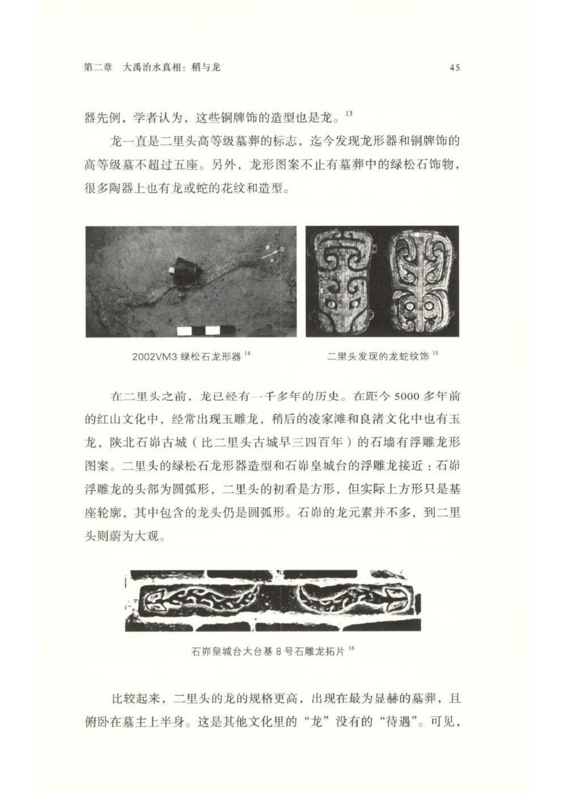
原书阅读器页 060原书物理 PDF 页 058印刷页 46
注释
1《史记•五帝本纪》。现存关于大禹的记载，主要来自《尚书》、战国诸子和司马迁的《史记》。
2中国社科院考古所：《二里头：1999—2006》第一册，文物出版社，2014年，第150页。有关二里头考古的基本信息及图片，未注明出处的皆出自该书，不再详注。
3这里采用的是较低的稻米千粒重数值，二里头稻米和粟米颗粒重量比实际应远超过八倍。二里头浮选结果并未介绍粮食颗粒的平均体积、重量，但王城岗遗址的浮选有体积：粟粒“均呈近圆球状，直径多在1.2毫米以上”，稻米“平均粒长是4.47毫米，平均粒宽为2.41毫米”，计算可知，粟米平均体积约0.9立方毫米，稻米平均体积近20立方毫米，是粟米的20倍，所以8倍的重量估值属于相当保守。参见赵志军《河南登封王城岗遗址浮选结果及分析》，《植物考古学：理论、方法与实践》，科学出版社，2010年，第148页。
4中国社科院考古所：《二里头：1999—2006》第三册，第1301页。这是等比例显示的图片，在有些浮选统计论文里，各种粮食照片的比例不同，显示的颗粒大小都近似，更容易使人忽视千粒重问题。
5赵志军：《偃师二里头遗址浮选结果的分析和讨论》，《农业考古》2019年第6期。
6北京大学震旦古代文明研究中心等：《新密新砦》，文物出版社，2008年，第522、523页。新砦一期数据中粟和黍被合计在一起，但这两者的千粒重相差较大，难以进行合并折算，所以这里只用了第二期数据。
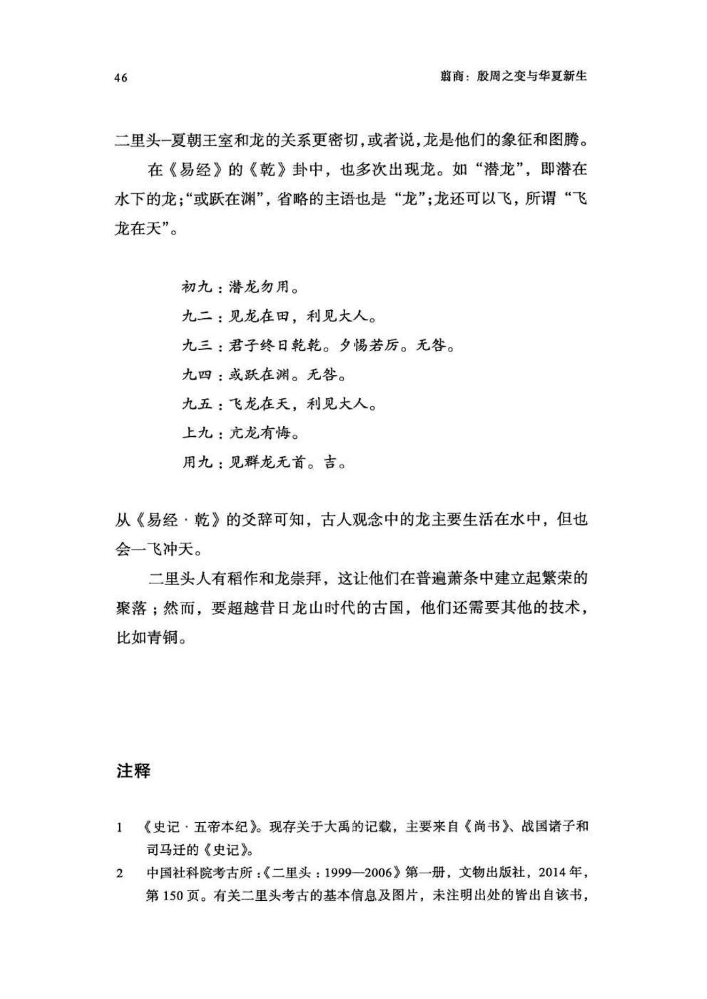
原书阅读器页 061原书物理 PDF 页 059印刷页 47
7根据中国社科院考古所《二里头：1999-2006》第四册彩版一改绘。
8赵志军：《偃师二里头遗址浮选结果的分析和讨论》。
9北京大学考古文博学院：《洛阳王湾：考古发掘报告》，北京大学出版社，2002年，第72页。
10袁飞勇：《煤山文化研究》，武汉大学2020年博士论文。关于新砦陶器所属文化类型及分布范围，学术界有不同的划分方式，本书采用的是较广义的一种。
11杜金鹏、许宏主编：《二里头遗址与二里头文化研究》，科学出版社，2006年，第112、137页。
12常淑敏：《二里头王都的龙文化研究》，中国社会科学院研究生院2014年硕士论文。2002是发掘年份，V是发掘区编号。
13王青、赵江运、赵海涛：《二里头遗址新见神灵及动物形象的复原和初步认识》，《考古》2020年第2期。
14朱乃诚：《二里头绿松石龙的源流：兼论石峁遗址皇城台大台基石护墙的年代》，《中原文物》2021年第2期。
15同上。
16同上。
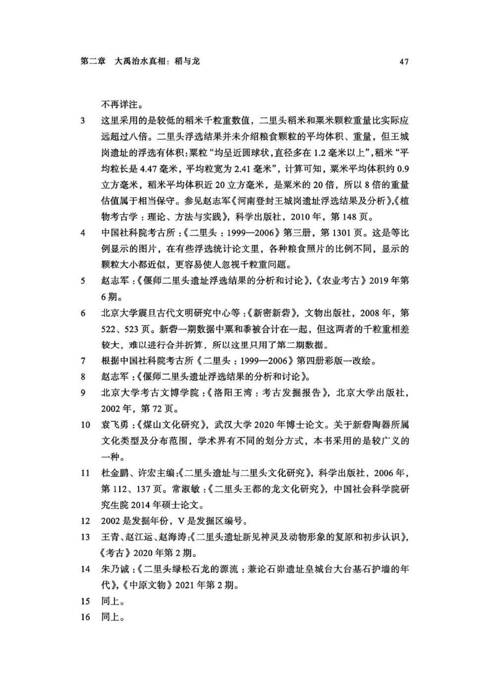
原书阅读器页 062原书物理 PDF 页 060印刷页 48
编辑札记
标记
先在正文中选择文字，再输入拼音；可用“拼音；简注”。